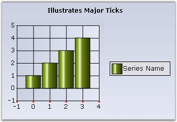
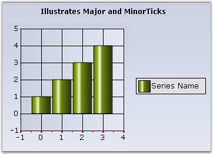

Major Ticks
Major Ticks are rendered automatically at the intersection of an axis with the interval grid lines. Here are some properties that will let you customize the look and feel, and behavior of the ticks.
|
ChartAxis Properties |
Description |
|
TickSize |
Specifies the width and height of the tick rectangle. This is also a good way to hide the ticks. Default is {1, 1}. |
|
TickColor |
Color of the tick mark. Default is System.ControlText. |
|
TickLabelGridPadding |
The padding between the tickmark in the axis and the label. Default is 5. |
|
TickDrawingOperationMode |
Defines the number of ticks to render while zooming.
NumberOfIntervalsFixed - When you zoom, the number of visible intervals will be constant. So, as you zoom in, the total number of intervals will increase.
IntervalFixed - The number of intervals will be constant. So, as you zoom in, fewer intervals will be visible at a time. |

Figure 259: PrimaryXAxis with Major Ticks (3x3, DarkOrange)
|
[C#]
this.ChartWebControl1.PrimaryXAxis.TickSize = new Size(3,3); this.ChartWebControl1.PrimaryXAxis.TickColor = Color.DarkOrange; this.ChartWebControl1.PrimaryXAxis.TickLabelGridPadding = 8F; |
|
[VB]
Me.ChartWebControl1.PrimaryXAxis.TickSize = new Size(3,3) Me.ChartWebControl1.PrimaryXAxis.TickColor = Color.DarkOrange Me.ChartWebControl1.PrimaryXAxis.TickLabelGridPadding = 8F |
Minor Ticks
Minor ticks are tick marks in between major ticks. These are not rendered by default. Use the properties below to enable and define the frequency of such minor tick marks.
|
ChartAxis Properties |
Description |
|
SmallTicksPerInterval |
Specifies if and how many minor ticks, which are tick marks drawn on the axis between intervals, should be drawn. |
|
SmallTickSize |
Specifies the size of the tick rectangle. |

Figure 260: Primary X-Axis with Major and Minor Ticks
|
[C#]
this.ChartWebControl1.PrimaryXAxis.SmallTickSize = new System.Drawing.Size(2, 2); this.ChartWebControl1.PrimaryXAxis.SmallTicksPerInterval = 1; |
|
[VB]
this.ChartWebControl1.PrimaryXAxis.SmallTickSize = new System.Drawing.Size(2, 2) this.ChartWebControl1.PrimaryXAxis.SmallTicksPerInterval = 1 |
A sample which demonstrates the above feature is available in the below sample installation path.
<Install Location>\Syncfusion\EssentialStudio\<Version Number>\Web\chart.web\Samples\3.5\Chart Axes\ChartTickMarks